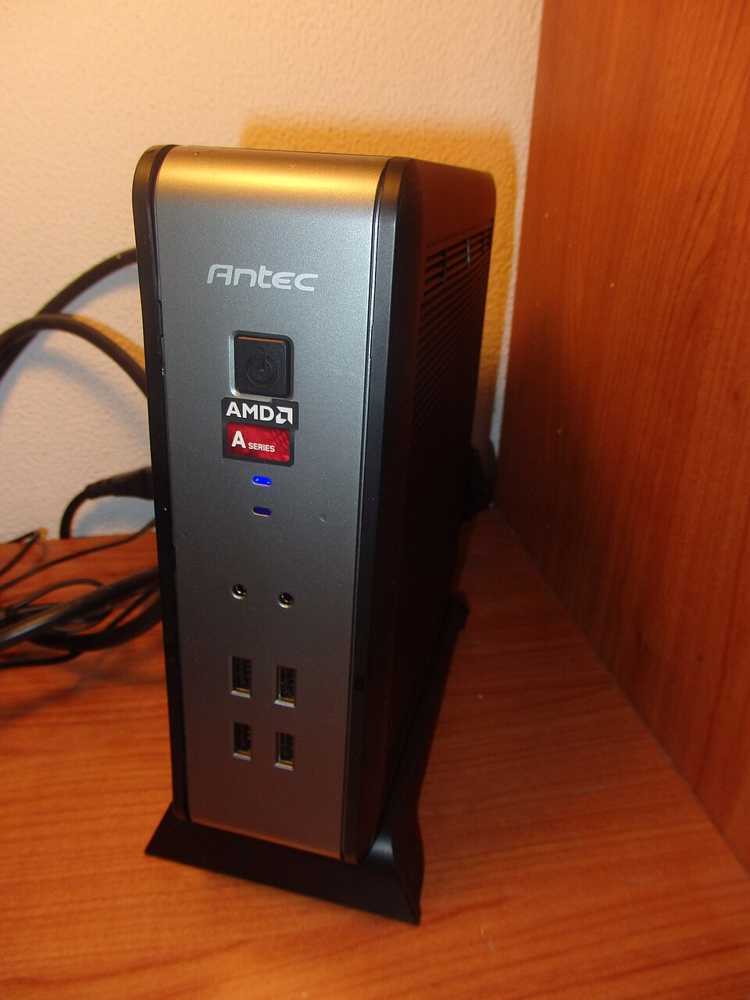

Monta tu primer servidor casero con $300: lista de compras completa
Montar un servidor casero no requiere una fortuna. Con un presupuesto de unos $300 puedes tener un equipo que corra tu biblioteca multimedia, bloquee la publicidad de toda la casa y te dé tu propia nube privada. La clave está en repartir bien el dinero: el cerebro del sistema (un mini PC reacondicionado o una Raspberry Pi 5), almacenamiento suficiente y un cableado decente.

Esta guía te da la lista de materiales completa con rangos de precio orientativos, te dice qué servicios realistas puedes correr con este presupuesto y, con la misma honestidad, qué no debes esperar por $300.
La lista de compras
Hay dos rutas válidas según lo que encuentres disponible: el mini PC reacondicionado (más potencia por dólar, ideal si aparece una buena oferta) o la Raspberry Pi 5 con accesorios (nueva, eficiente y con gran comunidad). Ambas caben en el presupuesto.
| Componente | Opción recomendada | Rango orientativo (sep 2026) | |
|---|---|---|---|
| Ordenador | Mini PC reacondicionado (i5 de 8.ª gen o similar, 8 GB RAM) | entre $120 y $180 | Ver precio |
| Alternativa al ordenador | Raspberry Pi 5 de 8 GB + fuente oficial 27 W + caja con ventilación | entre $110 y $150 | Ver precio |
| Almacenamiento principal | SSD de 500 GB–1 TB (para sistema y contenedores) | entre $40 y $80 | Ver precio |
| Almacenamiento de datos | Disco duro externo de 2–4 TB (para medios y copias) | entre $60 y $110 | Ver precio |
| Cableado de red | Cable Ethernet Cat6 de 3–5 metros | entre $8 y $15 | Ver precio |
| Extra opcional | Memoria USB para instalación del sistema | entre $8 y $12 | Ver precio |
Total estimado: entre $230 y $300 con el mini PC, o entre $220 y $290 con la Raspberry Pi 5, según las ofertas que encuentres. El margen restante es tu colchón para imprevistos (un segundo cable, un adaptador o una caja mejor).
Qué servicios puedes correr con este equipo
Con cualquiera de las dos rutas tienes potencia de sobra para los clásicos del home lab:
- Jellyfin: tu Netflix casero para ver películas y series en la tele, el móvil y el ordenador, en reproducción directa (sin transcodificar).
- Pi-hole: bloqueo de publicidad y rastreadores para todos los dispositivos de la casa desde el DNS. Consume poquísimos recursos.
- Nextcloud: tu nube privada para sincronizar fotos y documentos sin depender de terceros.
- Extras ligeros: un gestor de descargas, un lector de RSS, un panel tipo Homepage o un servidor de copias de seguridad. Todo esto cabe a la vez en 8 GB de RAM sin despeinarse.
La comunidad de usuarios reporta que un mini PC de estas características mueve Jellyfin + Pi-hole + Nextcloud simultáneamente con un consumo eléctrico de apenas 10–20 W en reposo, según las especificaciones del fabricante de cada componente.
Qué NO debes esperar por $300
La honestidad primero: este presupuesto tiene límites claros.
- Transcodificación 4K pesada: convertir vídeo 4K sobre la marcha exige mucha CPU o una GPU con aceleración dedicada. Con este equipo, sirve tus vídeos en reproducción directa y evita transcodificar.
- RAID amplio o muchos discos: no hay bahías ni presupuesto para un NAS de 4 discos con redundancia. Tu estrategia de seguridad aquí es una copia externa periódica, no el RAID.
- Varias máquinas virtuales pesadas: los contenedores Docker van perfectos; virtualizar varios sistemas completos con escritorio, no.
- Silencio absoluto con discos mecánicos: el disco duro externo se oye al trabajar. Si el servidor va en el salón, colócalo donde el zumbido no moleste.
Cómo elegir entre mini PC y Raspberry Pi 5
- Elige el mini PC reacondicionado si: encuentras una oferta con procesador Intel de 8.ª generación o superior y 8 GB de RAM; quieres más potencia bruta por el mismo dinero y no te importa que sea de segunda mano. Revisa que incluya su fuente original.
- Elige la Raspberry Pi 5 si: prefieres hardware nuevo con garantía, un consumo eléctrico mínimo y la mayor comunidad de tutoriales en español. Ojo: suma bien el precio de la fuente oficial de 27 W y una caja con buena ventilación; los kits genéricos suelen salir más caros por lo mismo.
- En ambos casos: conecta el servidor por cable Ethernet, nunca por WiFi. Es la mejora gratuita más importante de toda la lista.
Antes de comprar
- Define un servicio objetivo. Empieza con uno (por ejemplo, Jellyfin) y añade el resto cuando el primero funcione. Comprar pensando en "algún día necesitaré" es la forma más rápida de pasarte del presupuesto.
- En reacondicionados, pregunta por la batería del BIOS y el estado del SSD. Son los dos puntos débiles típicos; un SSD con muchas horas puede merecer sustitución inmediata.
- No escatimes en la fuente de la Pi. Según las especificaciones del fabricante, la Raspberry Pi 5 necesita su fuente oficial de 27 W para rendir al máximo; con cargadores genéricos aparecen avisos de bajo voltaje y el rendimiento cae.
- Reserva $20–$30 del presupuesto. Siempre aparece un cable que falta, un adaptador o una caja mejor. Ese colchón evita un segundo pedido con gastos de envío.
Veredicto: la compra recomendada por presupuesto
- Si encuentras un buen reacondicionado ($120–$180): mini PC + SSD de 500 GB + disco externo de 2 TB + cable Cat6. Es la combinación con mejor rendimiento por dólar. Ver precio
- Si prefieres todo nuevo: Raspberry Pi 5 de 8 GB con fuente oficial y caja ventilada + SSD USB de 500 GB + disco externo de 2 TB. Más eficiente y silenciosa. Ver precio
- Si te sobra algo del presupuesto: sube el disco externo a 4 TB antes que cualquier otra mejora; el almacenamiento es lo primero que se acaba. Ver precio
Preguntas frecuentes
¿Es suficiente con 8 GB de RAM para empezar?
Sí, de sobra para Jellyfin, Pi-hole, Nextcloud y varios contenedores más corriendo a la vez. Solo necesitarías más si planeas virtualización pesada o decenas de servicios simultáneos, algo fuera del alcance de este presupuesto de todos modos.
¿Puedo usar un disco duro viejo que tengo por casa?
Puedes, pero con precaución: revisa su estado de salud (horas de uso y sectores reasignados) antes de confiarle datos importantes. Para la biblioteca multimedia es aceptable; para tus fotos y documentos personales, mejor un disco nuevo o al menos una copia de seguridad externa.
¿Necesito un sistema operativo de pago?
No. Las opciones habituales (una distribución Linux ligera, o el sistema de la Raspberry Pi) son gratuitas, y todo el software mencionado (Jellyfin, Pi-hole, Nextcloud, Docker) es de código abierto y sin costo.
¿Cuánto consume este servidor en electricidad?
Según las especificaciones del fabricante, un mini PC de este tipo ronda los 10–25 W en uso típico y la Raspberry Pi 5 entre 5 y 12 W. En ambos casos el costo eléctrico mensual es bajo, del orden de unos pocos dólares al mes según tu tarifa.
Rangos de precio orientativos, verificados en septiembre de 2026. Los precios y la disponibilidad pueden cambiar.